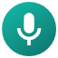
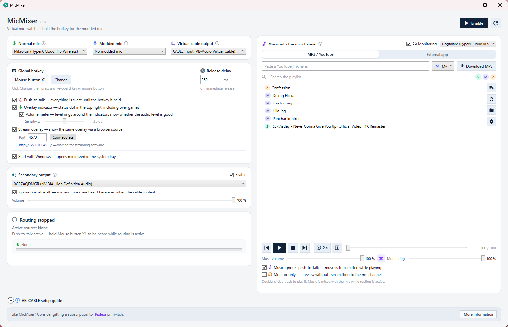

MicMixerMicMixer is a free, open-source Windows app. It takes your microphone and your music, mixes them, and plays the result into a virtual audio cable. Your game, Discord, or any voice chat just sees one ordinary microphone. MicMixer decides what goes into it: your normal mic, a voice-modified mic, music, or silence.
The point is that voice and music get separate rules. Your voice can sit behind push-to-talk while the music keeps playing. Or the music stays private until you're ready. Everything can be switched live, mid-session.
Downloads MicMixer-win-x64.zip from the
latest release.
Windows 10/11, x64. Self-contained, no .NET install needed. Apache-2.0.

Normally, in-game voice forces a choice: hold the talk key all night to keep your music audible, or let the music cut out every time you release it. With MicMixer, the game listens to the virtual cable with an open mic, and MicMixer's own push-to-talk decides what reaches it. Enable Music ignores push-to-talk and the music flows continuously while your voice still waits for the hotkey.
The secondary output plays the complete mix of mic and music, taken before the push-to-talk gate, on an extra playback device. Add that device as an audio capture source in OBS or Streamlabs. Your stream then hears every word and every track, while the game's mic channel only receives what you let through the gate. You can chat with viewers between scenes without a single word reaching in-game voice.
Select your real mic and a modified one (for example Voicemod's virtual device). While the hotkey is held, the modified mic is routed; on release you're back to normal. The hotkey can be any key or mouse button, including side buttons. A configurable release delay stops the modified voice from clipping off mid-sentence.
Monitor only keeps music out of the mic channel entirely and plays it in your headphones. Find the right song, set the level against the meters, then flip the toggle to send it. The status panel always states exactly where the music is going.
Use the built-in MP3 library (multiple folders, search, queue), paste a YouTube link to
download a track locally, or capture the audio of a running app such as Spotify and
route it into the mic channel. Downloads use local copies of yt-dlp and
ffmpeg, fetched once and verified with SHA-256.
A small click-through overlay sits above borderless games and shows the current state, with the same colors as the tray icon. Optional level rings show the actual outgoing signal, measured after the gates, so the mic ring shows exactly what the cable receives.
If your streaming software captures the game as a single process, desktop overlays are
not part of the picture. MicMixer therefore also serves the overlay as a local web page
(http://127.0.0.1:4573/) for an OBS browser source: same states, same
rings, and it reconnects by itself. Details in
docs/stream-overlay.md.
You need a virtual audio cable driver. The free VB-CABLE works well.
MicMixer-win-x64.zip, extract it, run MicMixer.exe.The README covers the rest: hotkeys, music routing in detail, local monitoring, troubleshooting, and where settings and logs live.